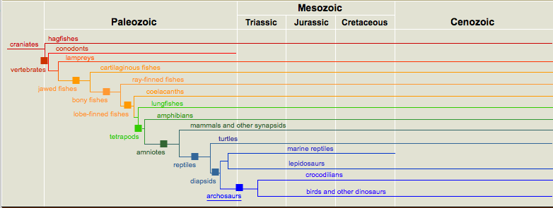

Topics: Representing networks and trees; Adjacency Matrices and Adjacency Lists
Can you get here from there? Say you an airlines that flies:
| New York | Chicago | Houston | San Jose | |
|---|---|---|---|---|
| New York | 1 | 1 | 1 | 0 |
| Chicago | 1 | 1 | 0 | 1 |
| Houston | 1 | 0 | 1 | 1 |
| San Jose | 0 | 1 | 1 | 1 |
Let's use a dictionary so, we don't have to remember which index corresponds to which city:
cityNum = {}
cityNum["New York"] = 0
cityNum["Chicago"] = 1
cityNum["Houston"] = 2
cityNum["San Jose"] = 3
Using numpy, the matrix (without labels):
import numpy as np flights = np.zeros( (4,4) ) flights[cityNum["NYC"],cityNum["Chicago"]] = 1 flights[cityNum["NYC"],cityNum["Houston"]] = 1 flights[cityNum["Chicago"],cityNum["NYC"]] = 1 flights[cityNum["Chicago"],cityNum["NYC"]] = 1 flights[cityNum["Houston"],cityNum["NYC"]] = 1 flights[cityNum["Houston"],cityNum["San Jose"]] = 1 flights[cityNum["San Jose"],cityNum["Chicago"]] = 1 flights[cityNum["San Jose"],cityNum["Houston"]] = 1 #Create the self-loops: for i in range(4): flights[i,i] = 1(complete program in flights.py).
We can reach San Francisco from New York by taking flights to an intermediary city (in this case, Chicago or Houston) and then continuing on. That is:
There are flights: (NYC -> Chicago and Chicago -> San Jose) or (NYC -> Houston and Houston -> San Jose)In the matrix, we have existing flights as 1 and no flight as 0, so instead of the and, we can multiply and just check that sum is greater than 0 (the sum is non-zero only when one of the terms is, which happens exactly when there's flights via the intermediary cities):
(NYC -> Chicago * Chicago -> San Jose) + (NYC -> Houston * Houston -> San Jose) > 0
In terms of math, we are taking a vector of the outgoing flights from a city and combining it with a vector of the incoming flights to the next city. This combination is called the dot product:
v dot w = v1*w1 + v2*w2 + ... vN*wNwhere the vectors are v = (v1, v2, ... vN) and w = (w1, w2,... wN).
In numpy, there is a built-in function for taking the dot product of matrices (often called `multiplying matrices', though the numpy matrix multiplication does something very different).
This is a lovely feature of using adjacency matrices to reprensent graphs. If there is an edge from a to b and an edge from b to c, then a to c is non-zero in the matrix A.dot(A). Why? The i,jth element of the A.dot(A) is the dot product of the row indexed by i by the column index by j, which is:
A[i,0]*A[0,j] + A[i,1]*A[1,j] + A[i,2]*A[2,j] + ... + A[i,n-1]*A[n-1,j]This entry is not zero, only when one of the terms of the sum is not zero (there's no cancelling since all distances are positive).
The result of A.dot(A) is:
| New York | Chicago | Houston | San Francisco | |
|---|---|---|---|---|
| New York | 3 | 2 | 2 | 2 |
| Chicago | 2 | 3 | 2 | 2 |
| Houston | 2 | 2 | 3 | 2 |
| San Francisco | 2 | 2 | 2 | 3 |
Before continuing, let's draw the cities we have. To do, we'll use basemap focused on the US (complete program in flights.py). In github, there is already a dictionary set up with entries for cities and there longitude and latitudes major_us_city_dma_codes. Instead of typing the coordinates in by hand, we will access the dictionary entries for each city we're mapping.
Try the program and see how it works.
A good use of adjacency lists is for storing sparsely populated graphs, such as trees. In this part of the lab, we will write a function that prints out all the leaves in a clade of a tree.
It is not hard, but a bit tedious, to parse a tree in Newick format (since you need to worry about extra spaces, names of more than one character, etc.). The file adjTrees.py has a tree already stored as an adjacency list in the dictionary tree. Pictorally, the tree is:

(Image from Smithsonian Institute)
The entries in our dictionary have the following structure:
(parentName,[child1,child2,...])If there are no children, the last part of the tuple is an empty list.
The goal of this part of the lab is to write a function that given a vertex name, v, to print out all leaves below it. Let's break this into parts:
printLeaves(v):
If v is a leaf, print out v
Else, for each child of v, printLeaves(child)
Let's translate that into Python:
def printLeaves(v):
if len(adjList[v][1]) == 0:
print v
else:
for child in adjList[v][1]:
printLeaves(child)
Try running the program adjTrees.py.
For each lab, you should submit a lab report by the target date to: kstjohn AT amnh DOT org. The reports should be about a page for the first labs and contain the following:
Target Date: 13 April 2016
Title: Lab 10: Representing Networks and Trees
Name & Email:
Purpose: Give summary of what was done in this lab.
Procedure: Describe step-by-step what you did (include programs or program outlines).
Results: If applicable, show all data collected. Including screen shots is fine (can capture via the Grab program).
Discussion: Give a short explanation and interpretation of your results here.
This course will use the on-line Rosalind system for submitting programs electronically. The password for the course has been sent to your email. Before leaving lab today, complete the first two challenges.